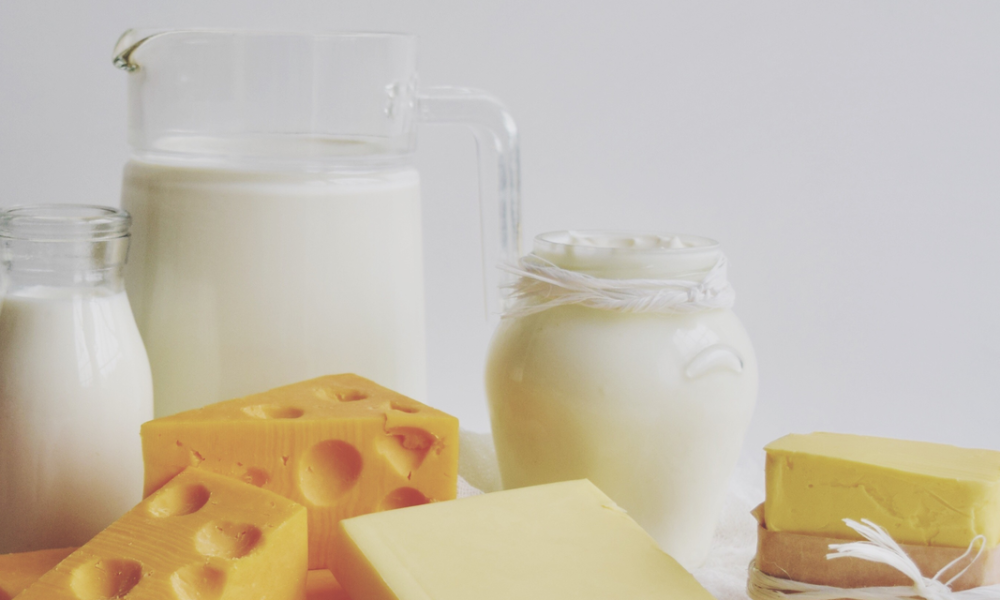

There isn't a single diet that eliminates eczema in everyone, but a good rule of thumb is to avoid any foods that seem to make your symptoms worse.
Focus on a healthy diet filled with fresh fruits and vegetables, healthy fats, and lean protein.
Quick and easy recipes
Roasted Potatoes with Chickpeas and Leeks
Perfect as a side dish or main meal, this roasted potato dish is simple, tasty and boasting with eczema friendly ingredients.
Loaded Sweet Potato Fries
This dish will be loved by all the family for an easy weeknight meal and perfect for lunch the following day.
Foods to avoid (more during flare ups!)

Dairy
After exposure to certain foods, your body might react in what is called “food responsive eczema.”

Tomatoes
While they may not actually trigger an allergic response, they can cause some people to experience eczema flare-ups.
Spices
Foods containing nickel. Nickel is an ingredient known to encourage symptoms of dyshidrotic eczema. Dyshidrotic eczema is a type of eczema that produces small blisters on the hands and the feet.
Citrus Fruits
They also contain an allergen called Balsam of Peru, which can be problematic for some people with eczema.
Remember that we are all diferent!
What it works for somebody, may not work for you. You need to keep checking out new things and consuming in a thoughtfull way.
If you want to share your ideas, research and experience please fill out our form!